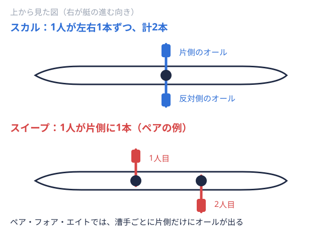
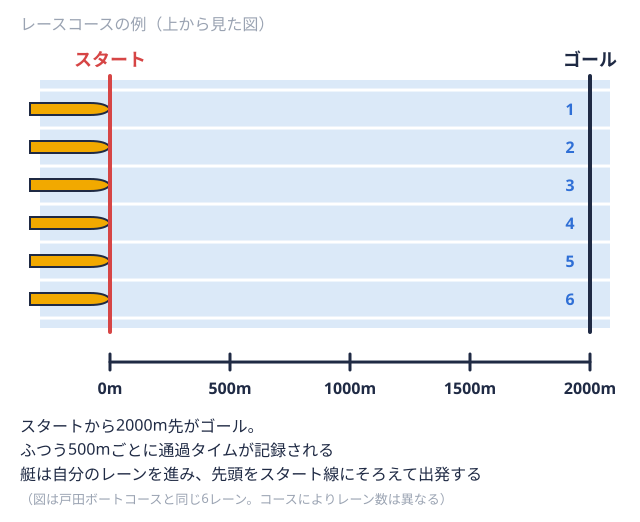

観戦ガイド 2026-09-04
ボート競技（ローイング）のルールを初心者向けに解説｜種目・用語・観戦の基礎知識
はじめての方向け
インカレボートや早慶レガッタボートのレースを集めて行う大会のこと。競漕会とも呼ばれる。など、大学ボートの大会を観戦しようと調べていると、「シングルスカル1人乗りの艇。1人が左右2本のオールを持つ。種目コードは「1x」。 （1人乗りの艇）」「エイト漕ぐ人8人と舵を取る人1人が乗る最大級の艇。1人1本のオールを持つ。
（1人乗りの艇）」「エイト漕ぐ人8人と舵を取る人1人が乗る最大級の艇。1人1本のオールを持つ。 （8人で漕ぐ艇）」「コックス艇に乗って舵を操作し、漕ぐ人に声で指示を出す人。自分ではオールを持たない。（舵を取る人）」といった聞き慣れない言葉に戸惑う方も多いのではないでしょうか。ボート競技（ローイング）は艇の種類やルールを少し知っているだけで、観戦の面白さが大きく変わる競技です。本記事では、これから大学ボートを観戦する方向けに、種目の見分け方やレースの基本構造、覚えておくと便利な用語をまとめます。ボート競技の知識がまったくなくても読めるよう、専門用語はその場で説明します。
（8人で漕ぐ艇）」「コックス艇に乗って舵を操作し、漕ぐ人に声で指示を出す人。自分ではオールを持たない。（舵を取る人）」といった聞き慣れない言葉に戸惑う方も多いのではないでしょうか。ボート競技（ローイング）は艇の種類やルールを少し知っているだけで、観戦の面白さが大きく変わる競技です。本記事では、これから大学ボートを観戦する方向けに、種目の見分け方やレースの基本構造、覚えておくと便利な用語をまとめます。ボート競技の知識がまったくなくても読めるよう、専門用語はその場で説明します。
ボート競技（ローイング）とは
ボート競技は、水上に浮かべた細長い艇にオールを使って乗り込み、一定の距離を漕いでタイムや着順を競う競技です。競技大会は「レガッタ」とも呼ばれます。国内では公益社団法人日本ローイング協会（JARA）が競技を統括しており、全日本大学ローイング選手権（インカレボート）をはじめとする各種大会もJARAの規則にもとづいて運営されています。
艇種の見分け方：スカルとスイープ
ボート競技の艇種は、大きく「スカル1人が左右に1本ずつ、合計2本のオールを持って漕ぐ方式。またその方式の艇。 
スカル系種目：1人2本のオールで漕ぐ
スカルは、1人の漕手オールを持って艇を前に進める選手。舵を取るだけの人は含めない。が左右1本ずつ、合計2本のオールを持って漕ぐ種目です。代表的な種目には、1人で漕ぐシングルスカル、2人で漕ぐダブルスカル2人乗りの艇。2人とも左右2本のオールを持つ。種目コードは「2x」。、4人で漕ぐクオドルプルスカルなどがあります。左右対称にオールを操るため、艇のバランスを取りやすいのが特徴です。
スイープ系種目：1人1本のオールで漕ぐ
スイープは、1人の漕手が片側だけを1本のオールで漕ぐ種目です。2人で漕ぐペア2人乗りで、1人1本のオールを持つ艇。舵を取る人が乗る型もある。、4人で漕ぐフォア4人乗りで、1人1本のオールを持つ艇。舵を取る人が乗る型もある。、8人で漕ぐエイトなどが該当します。スイープ種目では、漕手同士の呼吸を合わせる難易度が上がるため、チームとしての一体感が結果に直結しやすいと言われています。中でもエイトは、漕手8人と舵手（コックス）1人の合計9人が乗り込む最大級の艇で、大学ボートの大会でも花形種目として人気があります。オールの本数や艇種ごとの違いをさらに詳しく知りたい方は、スカルとスイープの違い｜大学ボート部の艇種・オール本数で整理しています。
レース距離とコースの基礎知識
全日本選手権など国内の主要な大会では、2000mの距離でレースが行われるのが基本です。会場となるコースは複数のレーンレースで各艇に割り当てられる、水上の自分専用の走路。艇ごとに番号が付いている。  から始まり、準々決勝出場する艇が多い種目で、準決勝の前に行うラウンド（勝ち上がり戦）。・準決勝決勝に進む艇を決めるラウンド。上位の艇が優勝を争う決勝に進む。を経て決勝に進む勝ち上がり方式が一般的で、大会終盤になるほど各校の実力伯仲したレースが見られるようになります。
から始まり、準々決勝出場する艇が多い種目で、準決勝の前に行うラウンド（勝ち上がり戦）。・準決勝決勝に進む艇を決めるラウンド。上位の艇が優勝を争う決勝に進む。を経て決勝に進む勝ち上がり方式が一般的で、大会終盤になるほど各校の実力伯仲したレースが見られるようになります。
・準決勝・決勝A優勝を決める最上位の決勝。優勝するにはこのレースに進む必要がある。/B）観戦をもっと楽しむための基本用語
種目名だけでなく、以下のような用語を知っておくと、実況やアナウンスの内容がぐっと理解しやすくなります。
ストローク
ストローク艇の最後尾寄りに座り、全員の漕ぐリズムを決める漕手。漕ぐ1回分の動作も指す。は、艇の最も後方（進行方向に対して一番後ろ）に座る漕手のことで、クルー1つの艇に乗る全員のまとまり。レースに出る単位にもなる。全体の漕ぐリズム（ピッチ1分間に漕ぐ回数。数字が大きいほど速いペースで漕いでいる。。1分間に漕ぐ回数）を作り出す役割を担います。経験豊富な漕手が務めることが多く、ストロークのリズムに他の漕手が合わせることでクルー全体の一体感が生まれます。
コックス（舵手）
コックスは、エイトなどの一部の種目に乗り込み、艇の操舵とクルーへの声かけを担当するポジションです。自らはオールを漕がず、進行方向を確認しながら艇をまっすぐ導き、レース中は漕手たちに指示や励ましの声をかけ続けます。コックスがいない種目では、漕手の1人が足元のペダルで舵を操作します。
クルー
クルーとは、1つの艇に乗り込むメンバー全体を指す言葉です。大学ボート部では、レースごとに異なる組み合わせのクルーが編成されることも多く、どのメンバーがどの艇に乗るかも観戦のポイントのひとつになります。
大学ボートの大会を観戦してみよう
基本的なルールと用語を押さえたら、実際に大学ボートの大会を観戦してみましょう。全日本大学ローイング選手権の観戦ポイントはインカレボート観戦ガイドで、早慶レガッタの見どころは早慶レガッタ観戦ガイドでそれぞれ詳しく紹介しています。応援したい大学が過去にどのような戦績を残してきたかは、大学別ページ一覧や2025年度 全日本大学ローイング選手権の結果で確認できます。事前に艇種やクルーの見分け方を押さえておけば、初めての観戦でもレースの展開をより深く楽しめるはずです。
まとめ
ボート競技は、オールを2本持つ「スカル」と1本持つ「スイープ」の2系統で艇種が分かれ、ストロークやコックスといった役割を知ることで観戦の解像度が大きく上がる競技です。レースは2000mの距離を予選から決勝まで勝ち上がる方式が基本で、大会終盤ほど白熱したレースが見られます。基礎知識を押さえたうえで大学ボートの大会に足を運べば、種目やクルーごとの違いを楽しみながら観戦できるでしょう。
出典
本記事の競技概要・種目・大会運営に関する情報は、公益社団法人日本ローイング協会（JARA）公式サイト（ローイング競技について）の公表内容をもとに編集部が作成しました。選手個人の氏名は掲載していません。最新のルール・大会情報は日本ローイング協会公式サイトをご確認ください。
この部活・競技を応援したい方へ
取材してほしい部活を募集中
オフシーズン・引退後に、長期インターンという選択
部活で培った力を実務で試す。16タイプ診断（30秒）で合う企業がわかります。